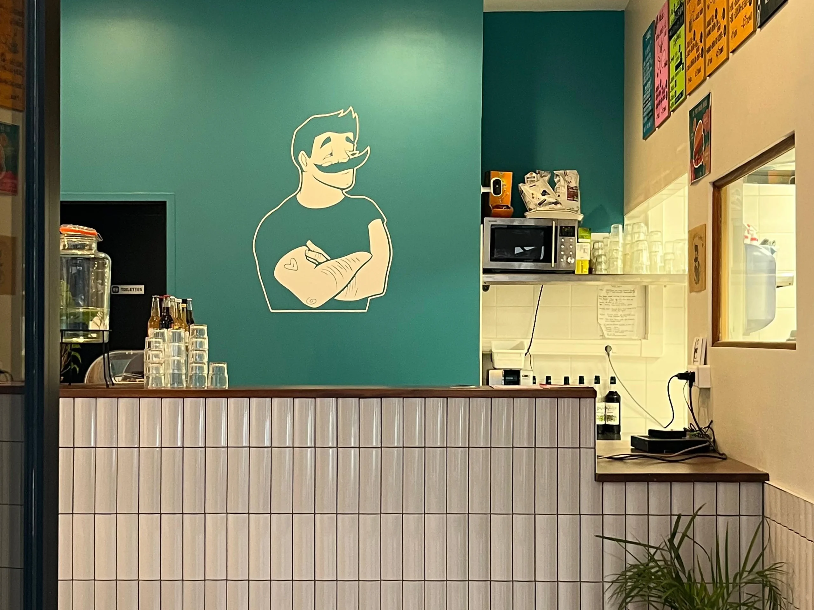

Édition n°02 — À venir
Le printemps,
fait main.
19.04.2026 10h — 18h
Pour notre deuxième édition, on prend racine à Güstavo, en plein cœur du 7ᵉ. Une journée entière dédiée aux créateur·rices lyonnais·es : illustration, peinture, bijoux, bois, bougies — tout ce qui pousse en saison. Ateliers, boutures à emporter, boissons et snacking sur place.
Nous contacterInfos pratiques
Tout ce qu'il faut
savoir.
Une seule journée, un seul lieu, et tout l'univers Coup d'Oeil dans une ambiance printanière.
Dimanche 19 avril 2026.
De 10h à 18h, en continu. Entrée libre toute la journée — pas besoin de réserver.
Güstavo, Lyon 7.
35 Rue Pasteur, 69007 Lyon. Métro Guillotière ou Saxe-Gambetta, à 10 minutes de Bellecour à pied.
Marché, ateliers, boutures.
Une sélection d'artistes lyonnais, des ateliers participatifs, un coin snacking & boissons, et des boutures à ramener à la maison.
Gratuit, pour tout le monde.
L'entrée est libre. Le stand est offert aux artistes. Aucune commission n'est prélevée sur les ventes.

Artistes présents
Une scène
en floraison.
Neuf créateur·rices lyonnais·es réuni·es pour cette édition. Faites défiler pour les découvrir, cliquez pour voir leur Instagram.
S'y rendre